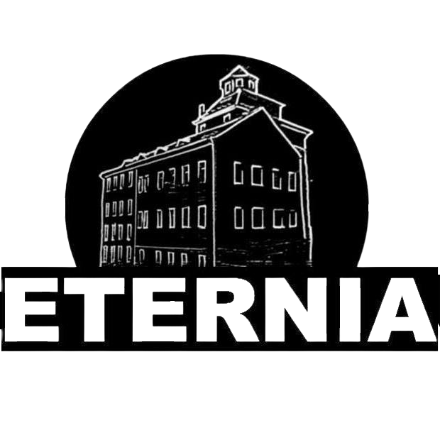
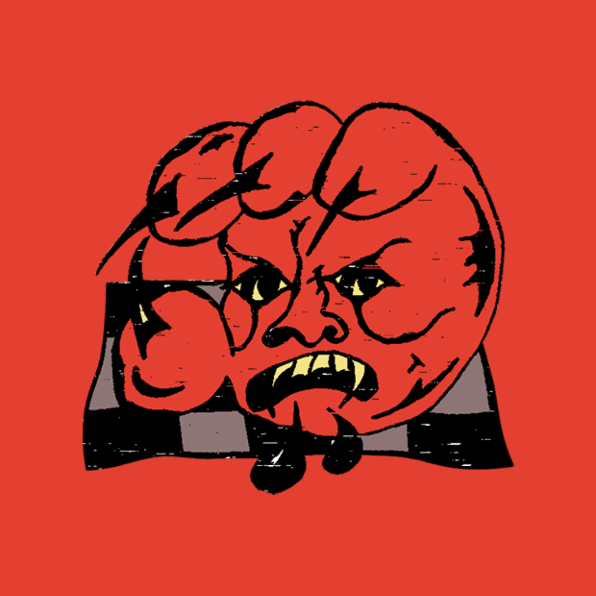

Kultura, advokacie, historie a zábava s šílenými, crazy bytostmi, přeživšími psychiatrie a nálepkovanými lidmi
Co je Mad Pride?
Jsi šílený*á? To je na hrdost! Mad Pride je festival umění, kultury a historie vytvořený přeživšími psychiatrie, psychiatrickými pacienty*kami, šílenými lidmi, a lidmi, které svět označil za "duševně nemocné". Mad pride je o vzpomínání na šílenou historii boje proti diskriminaci a o účasti na něm. Je to obhajoba práva na jinakost. Je to přijetí identity “šílence”. Je to rozvoj a posílení komunit bláznů a bláznivek. Naše životy jsou na hlavu a o to víc cenné a potřebují oslavu! Tou oslavou je první česká Mad pride s průvodem hrdosti "bláznů a šílenkyň".
Mad Pride 2023
Průvod se uskuteční 1. dubna v odpoledních hodinách v centru Prahy, následovat ho bude doprovodný program v Eternii a Underdogs' na Smíchově v režii lidí s vlastní zkušeností s psychickými obtížemi a/nebo psychiatrickým systémem – a to v podobě workshopů, pacientské konference „naruby“, kulturních vystoupení či výstavy „šíleného“ umění, který v pozdních hodinách zakončí djs. V průvodu i na celé akci vítáme jak lidi se zkušeností s psychiatrickým systémem, tak kohokoliv dalšího.
🎭Už den předem – tedy 31. března, se ale v Eternii můžete těšit na tematickou přednášku, čtecí kroužek a další aktivity, které zakončíme společnou výrobou masek a transparentů do sobotního průvodu. 🎭
|  | 31.3.2023 |
| 13:00 | Kruh intersekce - kolektivní čtení |
| 14:30 | Kateřina Kolářová - přednáška |
| 15:20 | Značka Kačka - deníkovací workshop |
| 16:20 | Kristína Janáčková - Dialóg namiesto hospitalizace: Aké prístupy okrem tradičnej psychiatrie existujú k psychoźe a schizofrenii? |
| 17:10 | Form and Flow Therapy - mad health: somatics and art |
| 18:40 | Jüdisch fraulein a Kateřina Peterková - šicí workshop |
1.4.2023 |
|
| 16:00 | Anti-konference |
| 18:00 | Ela Plíhalová - mad mapping workshop |
| 19:05 | Jüdisch fraulein a Radka Honsová - podpůrná skupina |
| 20:10 | Radka Honsová - pohybový workshop |
|  | 1.4.2023 |
| 16:25 | Mary C - workshop: hudební technologie, stereotypy, emoce |
| 18:00 | Autorská čtení |
| 20:30 | Hudba |
Mapy s cestou do Eternie a Underdog's tady a tady, popřípadě po kliknutí na jejich ikonku 😘
Benefice
Akci se snažíme dělat svépomocí, co to jen jde, ale nějaké finance na její organizaci přesto potřebovat budeme. Zveme vás proto na benefici, která se uskuteční 15. března v holešovickém cross clubu!
🔥potvrzení vystupující 🔥
Arleta
https://arleta.bandcamp.com
Mt. Florida
https://on.soundcloud.com/aSemV
SJ Yellow
https://soundcloud.com/sj_yellow
tmk
https://soundcloud.com/tmkdj420